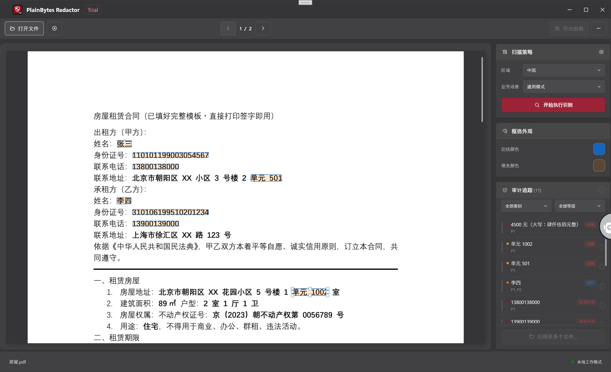

PlainBytes Redactor 使用手册
与当前 Windows 客户端能力对齐；若与已安装版本不一致，以软件内界面为准。
1. 产品定位
1.1 物理脱敏 vs 视觉遮盖
二者对「合规与安全」的含义完全不同，可按下表理解：
| 对比项 | 视觉遮盖（常见“涂黑”预览） | 物理脱敏（本应用目标） |
|---|
| 底层 PDF |
文字、矢量或图像对象仍可能保留在文件内，仅被图形挡住。 |
在内容流中删除对应字符/对象，使敏感信息无法从标准解析路径还原。 |
| 复制 / 搜索 |
部分文档仍可能复制到被“挡住”的文本（取决于实现）。 |
目标为移除后可复制文本中不再出现原敏感内容（以实际导出结果为准）。 |
| 适用场景 |
阅读展示、临时遮挡。 |
对外分发、归档、应审、尽职调查等需不可逆抹除的场景。 |
PlainBytes Redactor 的设计目标是物理脱敏；请在导出前通过「确认」明确哪些区域参与真正的删除。
1.2 「本地离线」意味着什么
- 处理在本机完成：打开 PDF、规则匹配、可选的本地 AI 推理、脱敏写入与校验，均在当前电脑上执行。
- 应用不把文档上传到云端：作为产品安全边界，不因脱敏流程主动将您的文件发往网络。
- 与系统行为的区别：当您主动使用「使用帮助」「检查更新」等菜单时，由系统默认浏览器或 Microsoft Store打开链接，这与「脱敏管线离线」是两件独立的事。
1.3 适合哪些场景
- 法律、金融、医疗、政务、审计等需要留痕复核且最小化外泄面的工作流。
- 需对外提供 PDF 副本，但必须去掉身份证号、账号、联系方式等可识别信息。
- 版式高度一致的 PDF，可在单文件中确认后通过应用到多个文件对多份副本做同几何基准的批量脱敏（见第 3 节步骤 G、第 9 节）。
2. 核心概念
2.1 什么是脱敏标记（RedactionMark）
在软件内部，每一处待脱敏区域都会对应一条脱敏标记，可理解为「一页上的一个矩形框 + 元数据」，主要包括：
- 页码与矩形范围：在 PDF 页面坐标系中的位置与大小。
- 状态：待确认与已确认——只有已确认的标记会参与导出时的物理删除。
- 来源：规则（正则/模式）、AI 或手动框选，用于区分是自动命中还是人工补充。
- 类别与风险等级：便于在审计侧栏筛选、排序与批量操作。
2.2 什么是「确认」？为什么需要人工确认
- 自动结果不等于最终裁决：规则与 AI 都可能产生误报（把正常内容标成敏感）或漏报（未命中），因此软件默认不会假设「全部自动命中都应删除」。
- 确认 = 您对该区域承担复核责任：标记为已确认后，导出时会将该区域纳入物理脱敏集合；未确认的不会当作最终脱敏范围。
- 合规与可追溯：人工确认环节对应真实业务里的「双人复核」「留痕」习惯，避免一键误删整页或误删非敏感段落。
2.3 规则引擎 vs AI 识别
| 对比项 | 规则引擎 | AI 识别（本地模型） |
|---|
| 依据 |
内置或自定义模式（如关键字、正则），与区域、业务场景配置相关。 |
基于本地 ONNX 模型的语义/实体类检测，多语言能力与训练数据相关。 |
| 可预期性 |
模式明确时行为稳定、易审计说明。 |
对版式、语境更灵活，但边界情况需人多看几眼。 |
| 典型用途 |
证件号、电话、邮箱等强模式字段。 |
叙述性文本中的姓名、地址、机构等「非固定格式」信息。 |
实际扫描中二者常同时参与；最终在审计侧栏统一以「标记」形式呈现，由您决定是否确认。
2.4 「批量基准」是什么
当前版本不提供将脱敏方案另存为命名模板文件、再在批量里挑选文件的流程。与批量相关的是软件在内存里使用的一份几何基准：
- 当您在单文件中完成确认后，通过应用到多个文件进入批量对话框时，程序会把当前文档上每一个已确认标记换算成相对页面宽高的归一化矩形（页码 + 相对坐标），仅用于本次批量会话。
- 对队列里的每一份目标 PDF，批量引擎只按这些矩形去套打脱敏，不会对每份文件重新执行一遍规则扫描或 AI 全文档识别。
- 什么时候适合用：多份 PDF 的版面、页码与敏感块位置与当前这份「样板」基本一致（例如同一套系统导出的对账单）。版式不一致时，套打可能错页、错位，需抽样检查。
- 规则中心里的规则：用于在当前单文件上找出命中并供您确认；它们不会在批量队列的每个文件上自动再跑一轮——批量阶段依赖的是您已确认下来的位置基准。
3. 完整工作流程
示例背景
法务小王收到一份 8 页的员工离职交接 PDF，需对外提供副本，但必须去掉手机号、银行卡号片段、个人邮箱等。文档为可选中文字的电子 PDF（非纯扫描图）。
步骤 A：打开文档
通过「打开文件」或拖入，加载该 PDF（亦支持常见图片格式，处理路径可能不同）。
后续所有预览、识别与标记都绑定到这一份源文件；先确保打开的是最终待脱敏版本，避免做错文件。
步骤 B：在规则中心选择区域与业务场景
打开「本地规则中心」，选择国家/地区等区域，再选业务场景（如通用、金融等），必要时启用/关闭部分内置规则或添加自定义规则。
规则组合随区域与场景变化；选错场景可能导致该启用的规则未启用，或误报增多。关闭文档前可保存偏好，下次同类文档更省事。
步骤 C：开始识别
在主界面右侧「扫描策略」相关区域点击开始识别（或等价按钮），等待构建文档模型与全文档扫描完成。
把规则与本地 AI 的命中结果变成大量「待确认」标记；若您修改了区域/场景/规则，应重新识别以刷新列表。
步骤 D：在审计侧栏复核
在右侧审计追踪列表中逐条或按筛选查看；对确需抹除的条目确认，对误报取消确认或从列表移除（按界面实际能力操作）。预览区黄色区域可与列表联动，点击可切换确认状态。
这是防止误删与漏删的核心环节；导出只认「已确认」。
步骤 E：手动框选补漏
在左侧预览上拖拽矩形，覆盖规则/AI 未命中但您知道必须去掉的内容；必要时调整「选区外观」颜色以便辨认。
自动检测无法保证 100% 覆盖，人工框选是最终安全网。
步骤 F：导出
点击「导出已脱敏」，选择保存路径；阅读完成摘要（物理移除条数、元数据清理、校验提示等）。
得到对外可发的终稿；摘要用于快速判断本次导出是否「看起来完整」，有警告时需打开导出文件人工 spot check。
步骤 G（可选）：应用到多个文件
小王在本 PDF 上把所有该脱敏的区域都确认无误后，在审计侧栏使用应用到多个文件（或等价入口）。软件会据此生成上述归一化几何基准并打开批量脱敏窗口；小王向队列中加入多份版式一致的 PDF、指定输出目录，勾选是否清理元数据，再执行批量。
在「同一套版式、敏感项位置相同」的前提下，避免对每一份文件重复画框确认；批量阶段按基准直接物理删除对应矩形范围。
重要限制：这不是「保存规则模板下次再选」——没有单独保存模板文件；基准来自当前这一份已确认文档。且批量不会对队列中每个文件重新跑规则/AI，若某份文件版式变了，应回到单文件流程重新识别与确认。
4. 主界面说明

主界面概览
4.1 左侧预览区
- 干什么用：按页渲染 PDF（或图像），真实反映页码与版面。
- 与标记的关系：自动或手动产生的待脱敏区域会以高亮框等形式叠加；点击某区域常可与「确认/取消确认」联动（以黄色提示与界面为准）。
- 手动框选：在预览上按下拖拽即可新增矩形标记。
4.2 右侧「扫描策略」面板
- 干什么用：展示与当前文档相关的识别策略入口（如开始识别），并与规则中心里配置的区域、场景、规则集相对应。
- 为什么单独一块：把「何时触发全文档扫描」与「审计列表里怎么改标记」在信息架构上分开，避免混淆。
4.3 右侧「框选外观」面板
- 干什么用：调整手动/选区相关显示效果，例如描边颜色、填充颜色、自定义颜色，在复杂背景上仍看清待确认框。
- 注意：这是界面辅助，不改变脱敏是否发生；是否导出脱敏仍由「确认」与导出动作决定。
4.4 右侧「审计追踪」面板
- 干什么用：列出当前文档中聚合后的敏感项，支持按类别、风险等级筛选，以及对单条或批量执行确认/取消等操作。
- 与预览如何联动：选中或操作列表项时，预览通常滚动/高亮到对应页与区域；在预览点击标记也会反映到列表中的确认状态。
4.5 工具栏各按钮（自上而下逻辑）
- 打开文件：选择本地 PDF 或支持的图像。
- 关闭文档：关闭当前文档。
- 上一页 / 下一页：在文档页之间切换，请使用工具栏按钮。
- 本地规则：打开规则中心，配置区域、场景、内置规则与自定义规则。
- 批量：进入批量脱敏控制台。
- 导出已脱敏：在存在已确认标记时导出 PDF。
- 更多选项（⋯）：语言、使用帮助、反馈与支持、检查更新、关于等。
状态栏会显示就绪状态、当前文件名以及本地 AI 引擎是否就绪等摘要信息。
5. 本地规则中心
5.1 区域和业务场景的关系
- 区域：偏向国家/地区维度，影响「哪些内置规则适用」（如当地证件、电话格式）。
- 业务场景：在相同区域下进一步收缩或强调规则集（通用、金融、医疗、法律政务等），使默认开启的规则更贴近文档类型。
- 二者关系：先定区域，再选场景；组合变化后建议重新执行识别，否则列表仍可能是旧策略下的结果。
5.2 内置规则 vs 自定义规则
- 内置规则：随产品提供，按类别分组（身份、金融、地址、联系方式等），可单独开关，数据来自本地配置，可完全离线使用。
- 自定义规则：由您定义显示名称与匹配模式；支持普通子串（不区分大小写）或 .NET 正则。适合内部代号、项目专用格式等内置未覆盖的情况。自定义规则数量可能有上限。
5.3 什么时候需要调整规则
- 某类文档误报很多：可暂时关闭高风险或过于宽泛的内置规则，或改选更贴切的业务场景。
- 反复出现固定格式但内置未覆盖：添加自定义规则，减少手工框选量。
- 误调乱了配置：使用「恢复默认」清空本地覆盖（操作前有确认）。
6. 审计侧栏详解
6.1 确认机制的设计逻辑
- 列表中的每一项往往对应「同一敏感类型或同一聚合键」在多页多次出现，您对条目执行确认，相当于认可这些出现均应被物理删除。
- 待确认状态用于隔离「机器猜测」与「人拍板」；避免未复核即整批写入。
- 导出引擎只消费已确认集合，这是产品与合规预期对齐的关键设计。
6.2 筛选和批量确认怎么用
- 筛选：按类别、风险等级缩小列表，优先处理高风险或某一类字段（如仅看「联系方式」）。
- 批量：对当前筛选下可见项一次性切换确认状态（具体按钮文案以界面为准），适合「这一批全是真敏感」或「这一批全是误报」的场景。
- 建议：批量操作前先看一眼筛选条件，避免把未看见的条目误带上。
6.3 风险等级代表什么
风险等级（如严重、高、可疑、中、低）用于排序与筛选优先级，帮助您先处理最可能造成泄露的命中；它不自动等同于「必须确认」——最终仍由您决定是否脱敏。
7. 手动框选
7.1 什么情况下需要手动框选
- 规则与 AI 都未命中，但您从业务上知道必须去掉的内容（如手写批注照片、特殊排版中的字段）。
- 命中分散或边界不准：可删除不准的自动条目后，用手动框精确覆盖。
- 纯扫描件若以图像形式处理：可选中文字的 PDF 与纯图像路径不同，图像类往往更依赖框选或专门流程（见常见问题）。
7.2 和自动检测结果如何配合
推荐顺序：先跑自动识别 → 审计侧栏批量消化明显误报/漏报趋势 → 少量用手动框补关键漏网之鱼 → 最后全页快速扫一眼预览。手动标记与自动标记在导出前统一以「是否已确认」为准。
7.3 键盘快捷键
单文件页在加载时向主窗口注册 PreviewKeyDown。仅在已打开文档且非忙碌时，下列按键会被该处理逻辑响应（与工具栏「上一页 / 下一页」无直接绑定）。
| 按键 | 作用 |
|---|
Tab | 选中下一个脱敏标记。 |
Shift + Tab | 选中上一个脱敏标记。 |
← ↑ → ↓ | 当未按任何修饰键时：←↑ 为上一标记，→↓ 为下一标记。当已按任意修饰键时：仅 ↑↓ 会按固定步长垂直滚动预览；←→ 不在此处理程序中响应。 |
Enter | 仅当未按修饰键时：切换当前选中标记的确认状态。 |
Delete | 仅当未按修饰键时：删除当前选中的标记。 |
Page Up / Page Down | 垂直滚动预览区（步长由当前预览视口高度决定）。 |
Home / End | 预览区滚动到顶 / 到底。 |
8. 导出
8.1 导出前的检查清单
- 当前文件是否为最终要对外的版本（页码、附件页无误）。
- 审计侧栏中，所有应删除项均已确认；明确不应删的已取消确认或移除。
- 已用预览通览关键页，手动补框是否已覆盖扫描件或特殊区域。
- 知悉导出将写入新文件（或您选择的保存路径），源文件默认不被本流程覆盖（以实际另存行为准）。
8.2 元数据清理的必要性
PDF 除正文外，常带有作者、创建程序、修改时间、XMP 等元数据。若只抹正文却保留元数据，仍可能泄露内部账号或编辑轨迹。本应用在导出（及批量的可选选项）中支持清理此类信息，建议对外分发时默认开启清理（若界面提供勾选）。
8.3 完成摘要怎么看
- 关注已物理移除的敏感项数量是否与预期量级一致。
- 关注元数据已清理的说明是否出现。
- 若存在文本校验警告：表示自动抽样比对发现疑点，需人工打开导出 PDF 做抽检，不可仅依赖摘要即断言「绝对无残留」。
9. 批量处理
9.1 批量时实际在做什么
从应用到多个文件进入并携带基准后，对每个队列中的 PDF，程序调用仅按基准套打的路径：把归一化矩形换算成该文件各页上的绝对坐标，生成待脱敏标记并执行物理删除与（可选）元数据清理。不会对每个文件再执行规则扫描或 AI 识别。
因此：单文件里用来「找字」的规则与 AI，只服务于您在样板文件上的确认结果；批量只是把「您已确认的位置」复制到多份几何结构相同的文件上。
9.2 适合的使用场景
- 同一系统、同一版式导出的多份 PDF，敏感区域在页上的相对位置固定。
- 已在一份样板上完整跑过识别、人工确认，并希望其余副本省略重复确认。
9.3 注意事项
- 无持久化模板：关闭批量窗口后，本次基准不当作「命名模板」留在磁盘上；下次批量需从新的样板文件再次执行应用到多个文件。
- 若从工具栏单独打开批量而未先经过上述入口，可能没有有效基准，开始按钮不可用（以界面为准）。
- 版式略有差异就会导致漏删或误删区域，首批结果务必抽样打开检查。
- 建议勾选清除文件属性与隐藏数据（若提供），便于对外分发。
- 该功能对文档类型与授权版本可能有限制（如部分栅格 PDF），以应用到多个文件是否可点为准。
10. 常见问题
10.1 为什么检测结果里有误报？
规则与 AI 都采用启发式或统计模型：形似敏感的字符串、地名撞车、表格中的数字片段都可能被标出。通过调整场景/规则、关闭某条规则、或在侧栏取消确认即可控制；设计上故意要求人工确认以降低一键误删风险。
10.2 扫描件怎么处理？
若 PDF 实为整页位图、无法抽取可选中文本，则规则/AI 能发挥的空间会受限，往往更依赖手动框选或产品内针对栅格文档的处理路径（以打开文件时的实际行为与提示为准）。处理前可先确认源文件是否为「真电子 PDF」还是「扫描件」。
10.3 可以直接打开图片做脱敏吗？为什么没有自动识别图片里的字？
可以。本应用支持打开常见图像文件作为待脱敏文档，流程上仍以预览 + 标记 + 导出为主。出于安装包体积与本机性能的取舍，当前版本未集成 OCR（光学字符识别）：图像中的文字不会自动转为可选中文本，因此规则扫描与本地 AI 文本识别基本不适用，敏感区域需您通过手动框选（及键盘在标记间切换、确认）完成。
10.4 导出后如何验证脱敏是否完整？
- 在 PDF 阅读器中尝试复制全文、搜索已知敏感关键字。
- 对关键页做目视检查（尤其页眉页脚、小字注释）。
- 参考软件给出的导出校验摘要；若有警告，优先针对警告页复查。
- 对极高风险场景，可结合贵司既有流程（二次工具抽检、抽样打印审阅等）。